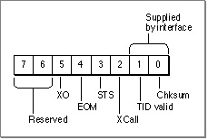

Legacy Document
Important: The information in this document is obsolete and should not be used for new development.
Important: The information in this document is obsolete and should not be used for new development.


The ATP Packet Format
An ATP packet includes an 8-byte header followed by up to 578 bytes of data. An ATP packet is preceded by the DDP header that, in turn, is preceded by the data-link header, referred to as the frame header.The ATP header contains the following information:
The ATP data follows the header. It can consist of from 0 to 578 bytes. An ATP packet is enclosed in a DDP datagram that is enclosed in a data-link frame. Figure 6-3 shows a close-up view of the first byte of the ATP header, the control information byte.
- The first byte consists of control information. Bits within this byte are set to identify aspects of a request or a response function.
- The second byte contains a bitmap/sequence number. This field is 8 bits wide, and
its use and significance depend on whether the ATP packet is a request packet or a response packet. For request packets, this field is referred to as the transaction bitmap, and it identifies the number of buffers that a requester application has reserved for the response data. For response packets, this field is referred to as the ATP sequence number, and it is used to identify the sequential position of the response packet in the complete response message; ATP uses the sequence number
to manage and handle lost or out-of-sequence response packets.- The third and fourth bytes carry the transaction ID assigned to a request and used by the response to that request.
- The fifth through eighth bytes carry user data; an application can use these bytes for its own purposes, for example, to transfer command information.
Figure 6-3 The ATP packet header control information byte

The Control Information Byte
ATP applications call response and request functions that generate request and
response packets. (ATP uses the release packet internally.) When set, the bits have
the following meanings:The Bitmap/Sequence Number
ATP ensures reliable delivery of data. This means that ATP retransmits all lost or dropped packets, and if it is unable to complete a transaction properly, ATP returns an error as the function result. To receive all the packets that make up a response message,
a requester application must provide enough buffer space to hold the data. A request message consists of a single packet, while each response message can contain up to eight response packets.Response packets are numbered from 0 to 7. ATP uses the sequence number to manage the transmission and receipt of response packets; the packet header ATP sequence number field contains 8 bits, 1 for each response packet.
ATP sets the sequence number in the request header to tell the .ATP driver code on the responder side which response packets the requester has not received. When a requester does not receive a complete response message, the .ATP driver code on the responder side can then send again only the packets that the requester side has not received, based on the bit settings of the transaction sequence number. ATP handles the retransmission of data internally without requiring any action on the part of your application. For information about the buffer records, see "The Buffer Data Structure" on page 6-20.
The Transaction ID
The third and fourth bytes of the ATP header carry a 16-bit transaction ID. The .ATP driver code on the requester side of a transaction assigns a unique transaction ID to each request that a requester application makes. The responder application that services the request includes this number as a parameter to the response call that it issues to send
its response back to the requester. The transaction ID ties together the request and its response, ensuring that ATP delivers the correct data in response to each request. An application can issue and have pending multiple concurrent asynchronous requests; ATP uses the transaction ID to keep track of them.User Bytes
ATP does not concern itself with the last 4 bytes of the ATP header. They are reserved for your use. You can use these bytes for any purpose prearranged by the requester and responder applications. The ATP functions include a parameter that you use to specify this data.